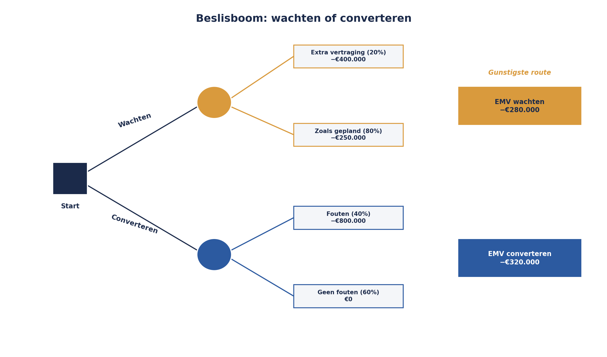
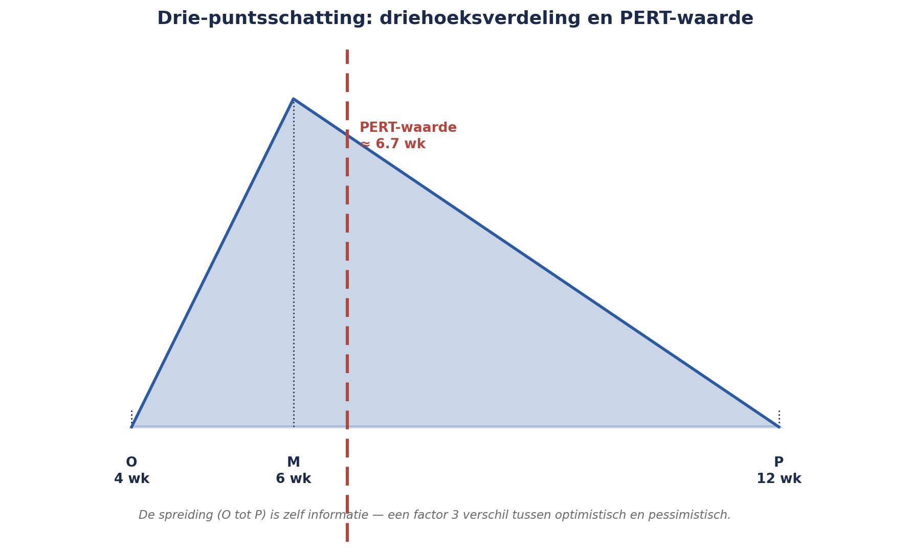

Cursus Risicomanagement · Niveau 2 (M_o_R 4/IRM) · Deel 14 van 30
Kwantitatief I: EMV, beslisbomen en drie punten.
De sequencing-kwestie tussen Project 3 en Project 5 is geëscaleerd naar een concrete keuze — wachten of converteren met ongeschoonde data — en de kwalitatieve matrix uit niveau 1 komt er niet uit: beide opties scoren "hoge impact", op fundamenteel verschillende manieren. Dit deel introduceert drie kwantitatieve technieken die dat wél kunnen: verwachtingswaarde (EMV), beslisbomen, en drie-puntsschattingen met de PERT-formule — en drie waarschuwingen over wanneer rekenen juist niet helpt.
6secties
±1,5uleestijd + werkboek
6controlevragen
3technieken
Positionering. Deze cursus is een voorbereiding op M_o_R 4 Practitioner (PeopleCert) en het IRM International Certificate in ERM (Institute of Risk Management), en uitdrukkelijk geen vervanging van het officiële examenmateriaal van die instanties. Controleer bij inschrijving altijd het actuele aanbod, de kosten en de examenvorm bij PeopleCert, het IRM of uw opleider zelf; informatie in dit materiaal is geverifieerd in augustus 2026 en kan wijzigen.
Niveau 2: 11 M_o_R 4: van project naar de hele onderneming → 12 Risicobereidheid, -capaciteit en toleranties → 13 Identificatie op programmaschaal → 14 Kwantitatief I: verwachtingswaarde, beslisbomen, drie-puntsschattingen (hier) → 15 Kwantitatief II: Monte Carlo-simulatie → 16 Bow-tie-analyse: oorzaken, gevolgen en barrières die je test → 17 Geaggregeerd risico en risico in verschillende leveringsmodellen → 18 IT- en cyberrisico → 19 Rapportage en besluitvorming → 20 Risicocultuur en gedrag → 21 De risicofunctie inrichten → 22 Examentraining en capstone: de geaggregeerde verdediging
01
Een beslissing die "hoog/midden/laag" niet aankan
⏱ 8 min
De sequencing-kwestie tussen Project 3 en Project 5 (deel 13) is inmiddels geëscaleerd naar een concrete beslissing. Project 5 (Datakwaliteit en Opschoning) loopt een risico op vertraging; als dat gebeurt, moet Project 3 (Conversie) kiezen tussen twee opties: wachten tot Project 5 klaar is (vertraging voor het hele programma) of converteren met de huidige, deels ongeschoonde data en later corrigeren (risico op fouten in lopende pensioenuitkeringen, maar geen vertraging).
Sanne Bakhuis probeert deze beslissing te scoren met de matrix uit niveau 1: kans, impact, brede band. Het lukt niet goed — beide opties hebben een "hoge impact", maar op fundamenteel verschillende manieren, en het bestuur wil weten wat de keuze werkelijk kost, in euro's en in tijd, niet alleen een kleur. Dit is precies het moment waarop kwalitatieve analyse, hoe zorgvuldig ook toegepast, haar grens bereikt.
02
Wanneer overstappen naar kwantitatief
⏱ 10 min
Niet elke beslissing verdient kwantitatieve analyse — de kwalitatieve technieken uit niveau 1 blijven voor het overgrote deel van de risico's in het register de juiste, proportionele aanpak (zie ook paragraaf 6, verderop in dit deel). Kwantificeren is de moeite waard wanneer aan minstens twee van de volgende voorwaarden is voldaan:
De beslissing heeft materiële financiële of tijdgevolgen die de moeite van precieze berekening waard zijn.
Er zijn meerdere, wezenlijk verschillende opties die elk een ander risicoprofiel hebben — zoals wachten versus converteren.
Er is voldoende bruikbare data of expertkennis om een zinvolle schatting te maken — kwantificeren zonder basis is schijnprecisie, niet meer waarheid (zie paragraaf 6).
De beslissing wordt op een hoog niveau genomen (Sponsoring Group, bestuur) waar "hoog/midden/laag" onvoldoende houvast biedt voor een verdedigbaar besluit.
De sequencing-kwestie voldoet aan alle vier: hoge financiële/tijdgevolgen, twee duidelijk verschillende opties, voldoende historische data over vergelijkbare conversies, en een beslissing die uiteindelijk bij de Sponsoring Group terechtkomt.
03
Verwachtingswaarde (EMV)
⏱ 14 min
De verwachtingswaarde (Expected Monetary Value, EMV) is de eenvoudigste en meest gebruikte kwantitatieve techniek: voor elke mogelijke uitkomst vermenigvuldig je de kans met het financiële gevolg, en je telt de uitkomsten op.
EMV = Σ (kansi × gevolgi)
Toegepast op de "converteren met ongeschoonde data"-optie: stel dat de kans op fouten in pensioenuitkeringen bij deze route 40 procent is, met een geschat herstelkosten- en reputatiegevolg van €800.000, en 60 procent kans op geen noemenswaardige problemen (gevolg €0):
Voor de "wachten"-optie: zekere vertraging van zes weken, met een geschat gevolg van €250.000 aan programmakosten (extra capaciteit, gemiste synergie met andere projecten) — hier is de kans 100 procent, dus:
EMVwachten = (1,0 × -€250.000) = -€250.000
Op basis van EMV alleen is "wachten" de gunstigere optie: een verwachte kostenpost van €250.000 tegenover €320.000. Merk op dat dit niet betekent dat wachten altijd de juiste keuze is — EMV is één input, geen automatisch besluit. In paragraaf 6 komt terug waarom.
Figuur 14-1 — De kansverdeling van "converteren" (40% -€800k, 60% €0) en van "wachten" (100% -€250k), met de EMV-uitkomst als horizontale lijn.
Controlevraag
Uit Werkboek deel 14, Opdracht 14.2 — bereken de EMV
1Een programma overweegt een tijdelijke, dure noodoplossing (kosten zeker €120.000) versus afwachten met een risico op verdere vertraging (30% kans op €500.000 aan cumulatieve programmakosten, 70% kans op €0). Bereken de EMV van beide opties en adviseer.Toon antwoord
Noodoplossing: zeker €120.000, dus EMV = -€120.000 (kans 100%, geen onzekerheid). Afwachten: EMV = (0,3 × -€500.000) + (0,7 × €0) = -€150.000. Advies op basis van EMV alleen: de noodoplossing (-€120.000) is gunstiger dan afwachten (-€150.000) — al blijft dit een input, geen automatisch besluit: een organisatie met een lage risicobereidheid kan bewust kiezen voor de duurdere, zekere optie, ook als de EMV daar niet voor pleit (koppel terug naar de risicobereidheid uit deel 12).
04
Beslisbomen
⏱ 14 min
Een beslisboom visualiseert een reeks van keuzes en onzekere gebeurtenissen als een boomstructuur, met EMV-berekeningen bij elke tak — nuttig zodra een beslissing niet één keuzemoment betreft, maar een keten van keuzes en onzekerheden.
Voor de sequencing-kwestie, uitgebreid met een tweede beslismoment: als Project 3 kiest voor "wachten", is er een aanvullende onzekerheid — mogelijk loopt Project 5 nóg verder uit (20 procent kans, extra vier weken vertraging, €150.000 extra kosten) of blijft het bij de geschatte zes weken (80 procent kans, de eerder genoemde €250.000).
┌─ Extra vertraging (20%): -€250.000 - €150.000 = -€400.000
Wachten ─────────────┤
/ └─ Zoals gepland (80%): -€250.000
Start ─┤
\
Converteren ─────────┬─ Fouten (40%): -€800.000
└─ Geen fouten (60%): €0
EMV bij "wachten", nu met de aanvullende onzekerheid meegenomen:
Nog steeds gunstiger dan converteren (-€320.000), maar het verschil is kleiner geworden dan de eerste, simpelere berekening liet zien — precies het soort inzicht dat een beslisboom oplevert dat een enkele EMV-berekening mist: hoe gevoelig is de uitkomst voor een tweede, onderliggende onzekerheid?

Figuur 14-2 — De volledige beslisboom als grafisch diagram, met EMV-waarden bij elke tak en de gunstigste route gemarkeerd.
Controlevraag
Uit Werkboek deel 14, Opdracht 14.3 — beslisboom uitbreiden
1Neem de EMV-berekening uit Opdracht 14.2 (noodoplossing -€120.000 versus afwachten -€150.000). Bij "afwachten" is er, als het misgaat (30%-tak), 50% kans dat de kosten beperkt blijven tot €500.000, en 50% kans dat ze oplopen tot €900.000. Bereken de nieuwe EMV voor "afwachten" en vergelijk opnieuw.Toon antwoord
Verwachte waarde binnen de misgaan-tak: (0,5 × -€500.000) + (0,5 × -€900.000) = -€700.000. Totale EMV voor "afwachten": (0,3 × -€700.000) + (0,7 × €0) = -€210.000. Vergelijking: de noodoplossing (-€120.000) is nu nog duidelijker de gunstigere optie dan bij de eerste, simpelere berekening (-€150.000 werd -€210.000) — een beslisboom met een extra vertakking kan de uitkomst wezenlijk verschuiven.
05
Drie-puntsschattingen
⏱ 14 min
Voor veel schattingen — met name doorlooptijd en kosten — is een enkel getal ("Project 5 duurt nog zes weken") een schijnzekerheid die net zo misleidend is als een score zonder criterium (Kernzin 2, niveau 1). De drie-puntsschatting vraagt in plaats daarvan drie waarden:
Optimistisch (O): als alles meezit
Meest waarschijnlijk (M): de realistische inschatting
Pessimistisch (P): als tegenslag optreedt
Deze drie waarden worden vaak gecombineerd tot een gewogen schatting via de PERT-formule:
Verwachte waarde = (O + 4M + P) / 6
Voor de resterende doorlooptijd van Project 5: optimistisch 4 weken, meest waarschijnlijk 6 weken, pessimistisch 12 weken (bijvoorbeeld als een specifiek datakwaliteitsprobleem dieper blijkt te zitten dan verwacht):
Twee dingen vallen op bij deze uitkomst. Ten eerste ligt de verwachte waarde (6,7 weken) niet precies op de "meest waarschijnlijke" schatting (6 weken) — de asymmetrie tussen optimistisch (4) en pessimistisch (12) trekt de verwachte waarde iets omhoog. Dat is een kenmerk van PERT, geen fout: de formule houdt rekening met scheve verdelingen, waarbij tegenslag vaak groter kan uitpakken dan meevaller.
Ten tweede, en belangrijker: de spreiding tussen optimistisch en pessimistisch (4 tot 12 weken, een factor drie) is zelf informatie. Een schatting van "6 weken, ergens tussen 5,5 en 6,5" vraagt een ander soort besluitvorming dan "6 weken, ergens tussen 4 en 12". Dit onderscheid — niet alleen het gemiddelde, maar ook de onzekerheidsmarge — is de brug naar Monte Carlo-simulatie in deel 15, waar honderden of duizenden mogelijke uitkomsten tegelijk worden doorgerekend in plaats van drie punten.

Figuur 14-3 — Een driehoeksverdeling met O, M en P, de PERT-verwachte waarde als verticale lijn iets rechts van M, en de spreiding gearceerd.
Controlevraag
Uit Werkboek deel 14, Opdracht 14.4 — PERT-formule toepassen
1Een projectonderdeel wordt geschat op: optimistisch 2 weken, meest waarschijnlijk 3 weken, pessimistisch 9 weken. Bereken de PERT-verwachte waarde en reflecteer op wat de spreiding zegt over hoe je met deze schatting zou moeten omgaan.Toon antwoord
Verwachte waarde = (2 + (4 × 3) + 9) / 6 = (2 + 12 + 9) / 6 = 23 / 6 ≈ 3,8 weken. Reflectie: de spreiding tussen optimistisch (2) en pessimistisch (9) is groot — een factor 4,5. Een eenvoudige planning die uitgaat van "3 weken" negeert daarmee een aanzienlijk risico op forse overschrijding. Bij zo'n grote spreiding is het raadzaam om, naast de verwachte waarde, ook expliciet te communiceren wat het pessimistische scenario zou betekenen — en te overwegen of een verdiepende analyse (Monte Carlo, deel 15) gerechtvaardigd is.
06
Wanneer kwantificeren niet zinvol is
⏱ 14 min
Kwantitatieve techniek is krachtig, en precies daarom gevaarlijk als hij verkeerd wordt toegepast. Drie waarschuwingen, die alle drie teruggrijpen op lessen uit niveau 1:
Een verwachtingswaarde is zo goed als de aannames erachter — nooit beter. De EMV-berekening in paragraaf 3 hangt volledig af van de geschatte kans (40 procent) en het geschatte gevolg (€800.000). Als die schattingen zelf zwak onderbouwd zijn, geeft de precisie van het eindgetal een vals gevoel van zekerheid — exact hetzelfde probleem als schijnprecisie bij de risicomatrix (matrixvalkuil 3, deel 5, niveau 1), nu in een indrukwekkender jasje.
Kernzin 9
Een kwantitatieve uitkomst is nooit beter dan de kwalitatieve schatting waarop ze is gebouwd — rekenen voegt precisie toe aan de vorm, niet aan de waarheid van de invoer.
Kwantificeren kost tijd en expertise die niet voor elk risico proportioneel is. Een risico met een beperkte impact verdient geen uur Monte Carlo-voorbereiding — dat is zelf een vorm van disproportionele respons, vergelijkbaar met de kosten-batenafweging uit deel 6 (niveau 1). Gebruik de voorwaarden uit paragraaf 2 als filter: alleen kwantificeren waar het er echt toe doet.
Een getal kan een gesprek dichttimmeren dat juist open moet blijven. Zodra er "-€280.000" op tafel ligt, is de verleiding groot om te stoppen met nadenken over kwalitatieve factoren die niet in geld zijn uit te drukken — bijvoorbeeld het vertrouwen van deelnemers in de juistheid van hun pensioenuitkering, dat door de "converteren"-optie eerder wordt geraakt dan de EMV alleen laat zien. Een kwantitatieve uitkomst is een input voor het gesprek, geen vervanging ervan.
Kort samengevat: kwantificeren is de moeite waard bij materiële gevolgen, meerdere wezenlijk verschillende opties, voldoende data, en beslissingen op hoog niveau — niet voor elk risico. EMV, beslisbomen en drie-puntsschattingen met de PERT-formule leveren elk een ander soort inzicht, en Kernzin 9 blijft door dit alles heen gelden: een kwantitatieve uitkomst is nooit beter dan de kwalitatieve schatting waarop ze is gebouwd.
Controlevragen
Uit Werkboek deel 14, Opdracht 14.1 — kwantificeren of niet?
1Een risico met een geschat gevolg van €2.000, waarvoor twee opties bestaan die nauwelijks van elkaar verschillen. Kwantificeren?Toon antwoord
Niet kwantificeren. Beperkte financiële impact, nauwelijks verschillende opties — kwalitatieve inschatting (laag/midden/hoog) volstaat en is proportioneel.
2Een keuze tussen twee leveranciers voor een kritiek onderdeel van het programma, met een verschil van mogelijk €400.000 in verwachte meerkosten, gebaseerd op vergelijkbare eerdere projecten. Kwantificeren?Toon antwoord
Wel kwantificeren. Materiële financiële gevolgen, twee wezenlijk verschillende opties, voldoende vergelijkbare data beschikbaar — dit is een schoolvoorbeeld van waar EMV waarde toevoegt.
3Een nieuw risico waarvoor nog geen enkele data of ervaring beschikbaar is, en waarover niemand in de organisatie een onderbouwde inschatting kan geven. Kwantificeren?Toon antwoord
Niet kwantificeren, ondanks mogelijk hoge impact. Zonder enige onderbouwde inschatting zou kwantificeren schijnprecisie opleveren (Kernzin 9) — hier is eerst meer informatie verzamelen (terug naar het onderscheid risico/onzekerheid uit deel 1, niveau 1) de juiste eerste stap, niet rekenen. Dit is de belangrijkste valkuil van dit deel: hoge impact voelt als een reden om te kwantificeren, maar zonder basisdata levert dat alleen schijnzekerheid op.
Verder naar deel 15
Deel 15 (twee dagdelen) bouwt hierop voort met Monte Carlo-simulatie: in plaats van drie punten of één beslisboom, honderden tot duizenden mogelijke uitkomsten tegelijk doorgerekend — hands-on, met een echte simulatietool, toegepast op de volledige programmaplanning van het Mutatieplatform.